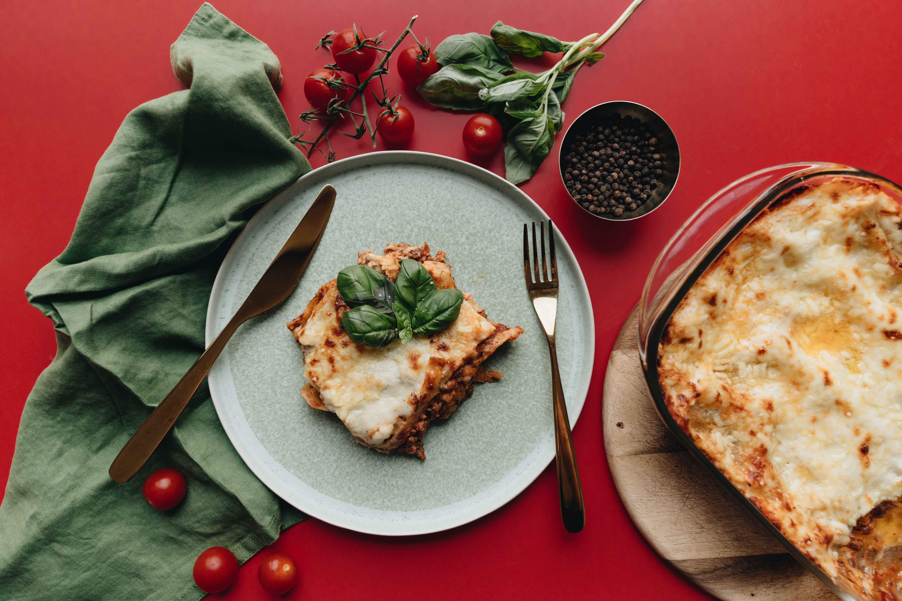

Le goût enrobant du bacon !

Salle Américaine
Explorez l'évolution des lasagnes dans la culture américaine. Des
expositions vous guideront à travers les influences et les
variations. Les visiteurs peuvent savourer des lasagnes remplies
de viande hachée, de fromage cheddar fondu et de bacon
croustillant. C'est une exploration gastronomique de la fusion
entre le style américain et le plat classique italien.
Notre salle la plus populaire !

Salle Italienne
Découvrez l'histoire de la lasagne italienne et sa relation avec
la culture italienne. Des expositions mettent en avant les
variations régionales et les traditions. Lasagnes authentiques
préparées avec des recettes transmises de génération en
génération. Les couches de pâtes fraîches, la sauce tomate maison
et le fromage fondant créent une symphonie de saveurs.
Les saveurs les plus rafinées !

Salle Française
Dans la salle française, découvrez l'histoire de la lasagne à la
française, ses influences et ses créations sophistiquées. Ici, les
lasagnes sont préparées avec des ingrédients de qualité
supérieure, tels que des champignons sautés, du fromage de chèvre
crémeux et une sauce béchamel parfumée. C'est un hommage à la
finesse et à la sophistication de la cuisine française.